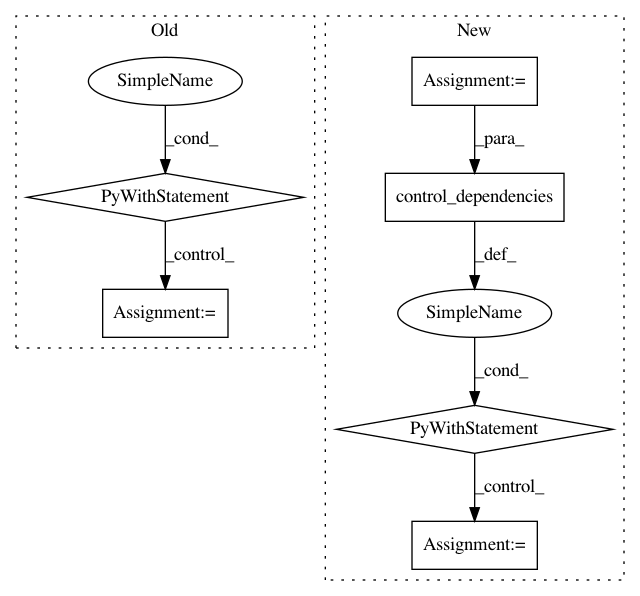

4251a86130e46e9d8a5e52ffc1c7f86bbd7f3f8a,tensorforce/core/preprocessing/running_standardize.py,RunningStandardize,tf_process,#RunningStandardize#Any#,48
Before Change
trainable=False
)
with tf.control_dependencies([tf.assign_add(ref=count, value=1)]):
// TODO Do we want to allow an axis or always standardize along time
update_mean = tf.reduce_sum(input_tensor=(state - mean_estimate), axis=self.axis)
// Update implements: https://www.johndcook.com/blog/standard_deviation/
// TODO check batch shapes?
float_count = tf.cast(x=count, dtype=tf.float32)
mean_estimate = tf.cond(
pred=(count > 1),
true_fn=(lambda: mean_estimate + update_mean / float_count),
false_fn=(lambda: mean_estimate)
)
update_variance_sum = (state - mean_estimate) * (state - update_mean)
variance_sum_estimate = variance_sum_estimate + \
tf.reduce_sum(input_tensor=update_variance_sum, axis=self.axis)
variance_estimate = tf.cond(
pred=(count > 1),
true_fn=(lambda: variance_sum_estimate / (float_count - 1.0)),
false_fn=(lambda: variance_estimate)
)
// print("mean estimate shape = {}".format(tf.shape(mean_estimate)))
return tf.cond(
pred=(count > 1),
true_fn=(lambda: (state - mean_estimate) / (tf.maximum(x=tf.sqrt(x=variance_estimate), y=util.epsilon))),
false_fn=(lambda: state)
After Change
trainable=False
)
assignment = tf.assign_add(ref=count, value=1.0)
with tf.control_dependencies(control_inputs=(assignment,)):
// Mean update
mean = tf.reduce_sum(input_tensor=(tensor - mean_estimate), axis=0)
assignment = tf.assign_add(ref=mean_estimate, value=(mean / count))
with tf.control_dependencies(control_inputs=(assignment,)):
def first_run():
// No meaningful mean and variance yet
In pattern: SUPERPATTERN
Frequency: 3
Non-data size: 6
Instances
Project Name: reinforceio/tensorforce
Commit Name: 4251a86130e46e9d8a5e52ffc1c7f86bbd7f3f8a
Time: 2018-01-28
Author: aok25@cl.cam.ac.uk
File Name: tensorforce/core/preprocessing/running_standardize.py
Class Name: RunningStandardize
Method Name: tf_process
Project Name: reinforceio/tensorforce
Commit Name: ee950b503eeed5aca3747a4bcf2a40f624b743a0
Time: 2019-01-21
Author: alexkuhnle@t-online.de
File Name: tensorforce/core/optimizers/multi_step.py
Class Name: MultiStep
Method Name: tf_step
Project Name: tensorflow/transform
Commit Name: d7a7dd6fe7106f6501e9995a92153f65238bbb47
Time: 2019-06-21
Author: tf-transform-dev@google.com
File Name: tensorflow_transform/analyzers.py
Class Name: QuantilesCombiner
Method Name: _make_get_buckets_callable